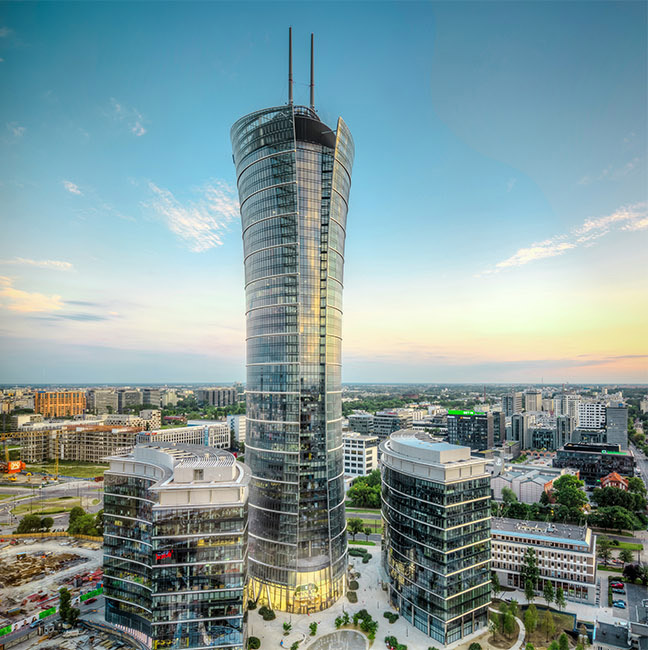
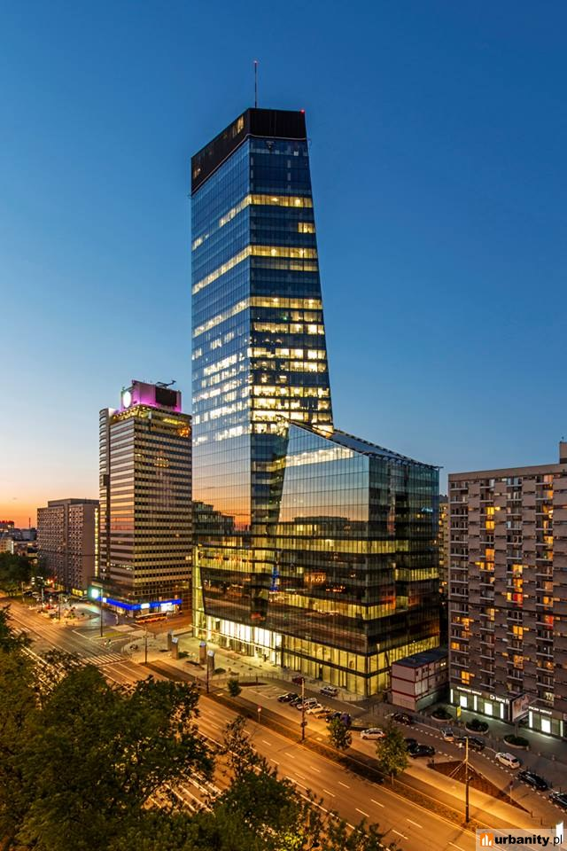
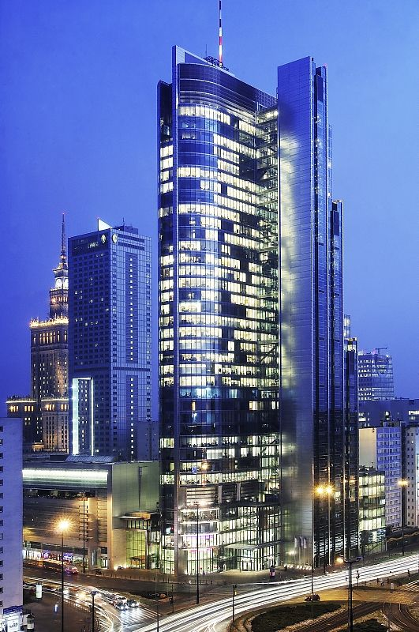

Top #3

Warsaw Spire jest najwyższym obiektem biurowym w Warszawie i jednym z najwyższych biurowców w Europie. Pod obiektem znajduje się pięciopiętrowy parking podziemny z ponad 1000 miejsc parkingowych.
Prace budowlane zostały rozpoczęte w połowie 2011 roku od wykonywania ścian szczelinowych, które są najgłębszymi jakie wykonano do tej pory w Polsce, a ich konstrukcja sięga do głębokości 55 metrów poniżej poziomu terenu. W czasie wykonywania ścian szczelinowych użyto ponad 21 000 m3 betonu (2400 betoniarek).

Litera „Q” w nazwie biurowca stanowi odniesienie do struktury kryształu kwarcu, od której pochodzi inspiracja architektoniczna.
Budynek powstał w miejscu hotelu sieci Mercure Fryderyk Chopin, który zakończył swoją działalność 15 grudnia 2011 roku i został nabyty przez firmę Echo Investment w tym samym miesiącu za kwotę 31 milionów euro. Budowa rozpoczęła się w czerwcu 2013 roku, a budynek został oddany do użytku w lipcu 2016. Jego szacunkowa wartość to 500 milionów zł.

Bryłę budynku tworzą dwie części: niższa 10-piętrowa, pełniąca funkcję galerii handlowo-usługowej, której budowa została zakończona na początku 2005, oraz wyższa 40-piętrowa. Całość 40-piętrowej wieży jest przeszklona. Jest obiektem klasy AAA, przyznawanej budynkom o najbardziej prestiżowej lokalizacji, najnowocześniejszym wyposażeniu i najlepszej architekturze.
Prace budowlane rozpoczęto na wiosnę 2003. 7 marca 2006 odbyło się uroczyste otwarcie całego obiektu. Budynek kosztował 200 mln euro. Rondo 1 posiada powierzchnię użytkową 61 000 m². Jest w nim 18 szybkich wind panoramicznych oraz 2 windy towarowe.